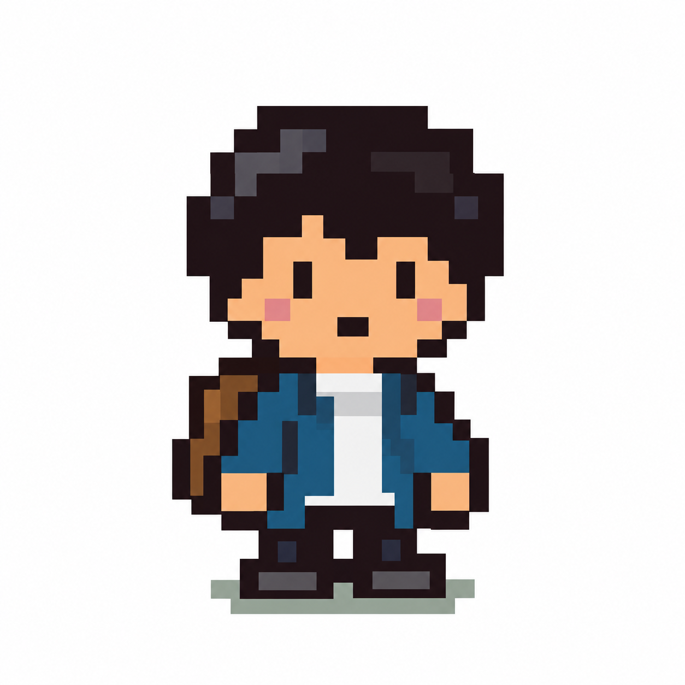

ADVENTURE STATUS
Lv.1 はじまりの町
54 EXP次のレベルまで46 EXP取り組んだぶんEXPが増える
図鑑に登録5語
王冠0 / 286
今日の修行5語
YOUR ADVENTURE
少しずつ、装備が整っていく。
できるようになったことが、冒険者の装備になります。
👑0/ 286

街の冒険少年
STEP 1 · みるいつものスニーカー0 / 286次まであと15語
STEP 2 · いう小さなたて0 / 286次まであと15語
STEP 3 · かくはじめのつるぎ0 / 286次まであと15語
👑 · ていちゃくいつもの服0 / 286次まであと15語
ADVENTURE MAP
いまいる場所
次の場所まで、あと25王冠。
王冠が増えると、少しずつ先の景色が見えてきます。
TODAY'S QUEST
5語だけ、やってみよう
目安：3〜6分 ／ 途中でやめても記録は残ります
単語の3段階
01見る英語 → 意味
→
02言う・聞く日本語 → 英語 → 🔊
→
03書く日本語 → 正しい綴り
初めての語は同じ語を1→2→3。いったん書けた語は、翌日以降STAGE 1・2・3をMIXして思い出します。
1 / 5語
STAGE 1 · 見る
NEW
✦ 最初は順番に育てる。定着期はMIX。できなかった段階は翌日にもう一度でOK。
今日の修行、ここまで！
取り組んだぶんが、次の冒険につながります。
今回のEXP+0
挑戦した単語0語
復習する単語0語
次の一歩
✍️ 書き取りおすすめ
今日は、この語を1回だけ見ずに書くと定着しやすそうです。やらなくてもOK。
単語図鑑
最初は順番、その後はMIX復習。数日後に思い出せるかも記録します。
テスト範囲の語を優先して表示します。
記録とバックアップ
今日の記録
バックアップ
学習結果はこの端末・ブラウザ内に保存します。PCとiPadは自動同期しません。
読み込みは現在の記録を置き換えます。
開発・テスト用
進捗シミュレーター
本番記録をコピーして一時表示します。TEST MODE中の変更はlocalStorageへ保存されません。
一括プリセット：装備7段階をすぐ確認できます。
学習上の順序を守るため、王冠 ＞ Step3 ＞ Step2 ＞ Step1 になる入力は、自動的に前段階も同じ数まで引き上げます。
以下は本番データを変更するリセット機能です。フールプルーフ付き。この端末のデータだけが対象です。
「学習進捗を初期化」は RESET、「完全初期化」は FULL RESET の文字入力確認があります。